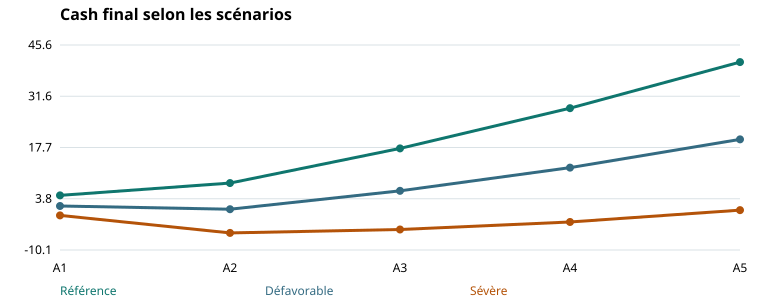

Objectifs de la séance
- Distinguer une sensibilité, un scénario combiné et un stress inversé.
- Répercuter un choc sur l’EBITDA, l’impôt, le BFR, le cash et la couverture de la dette.
- Associer une réponse financière à un seuil, à une personne responsable et à un délai.
Déroulé des 180 minutes
| Durée | Activité |
|---|---|
| 15 min | Lecture des hypothèses centrales et des seuils de gestion |
| 30 min | Méthodes de stress et canaux de transmission |
| 35 min | Reconstruction guidée du scénario défavorable A1 |
| 10 min | Pause |
| 35 min | Exercices A à C : seuil, hausse des taux et facilité |
| 35 min | Atelier : combiner financement contingent et adaptation du programme |
| 20 min | Correction et rédaction de trois règles de décision |
Cas fil rouge. Maghreb Agro-Industries est une entreprise fictive. Les montants sont en millions de dirhams (M MAD), sauf indication contraire. Les seuils et les taux sont pédagogiques. Consulter le dossier commun et ses données.
COURS · PARTIE 1
Construire et lire les scénarios
Sensibilité, scénario et stress inversé
Une sensibilité modifie un paramètre pour comprendre son effet. Un scénario combine plusieurs évolutions cohérentes. Un stress inversé part d’un échec défini, par exemple cash inférieur à 3, et cherche les conditions qui le provoquent. Ces exercices répondent à des questions différentes : facteur déterminant, robustesse d’ensemble, ou frontière de vulnérabilité.
Le scénario de référence n’est pas « le futur probable » par défaut. Une probabilité exige une justification. Les scénarios NGFS sont exploratoires et ne doivent pas être convertis automatiquement en probabilités ni en prévisions de chiffre d’affaires d’une entreprise. Leur utilisation demande une chaîne de transmission macroéconomie → secteur → entreprise. Nos scénarios numériques sont des constructions pédagogiques propres au cas, non des projections NGFS. [NGFS]
Il faut définir la durée du choc, le passage des prix aux clients, la réaction des volumes, les coûts évitables et le calendrier des adaptations. Une baisse de demande peut libérer du BFR tout en réduisant la marge : négliger l’un des deux effets fausse le cash.
Le moteur des scénarios communs
| Scénario | CA par rapport à la référence | Prix de l’énergie résiduelle | Autres hypothèses |
|---|---|---|---|
| Référence | 100 % | Pas de choc | Programme et financement communs |
| Défavorable | 90 % chaque année | +30 % | Coûts fixes inchangés |
| Sévère | 80 % chaque année | +50 % | Coûts fixes inchangés |
Le CA de chaque année est le CA de référence multiplié par 0,9 ou 0,8 ; la baisse ne se cumule pas de nouveau chaque année. Les charges variables restent 60 % du CA stressé. La base d’exposition énergétique résiduelle est max(0 ; 8 × 1,02^t − économies E et S actives). Le surcoût est le choc de prix multiplié par cette base. W concerne l’eau et ne réduit pas ce montant énergétique.
Cette convention maintient l’exposition physique résiduelle indépendante de la baisse du CA pour représenter une consommation en partie rigide. Elle est explicite et discutable ; une autre hypothèse demanderait un autre modèle. Les charges variables de référence contiennent déjà l’énergie : on ajoute uniquement le surcoût du choc.
Exemple résolu : le choc de A1
Dans le scénario défavorable, CA = 94,5 ; charges variables = 56,7 ; charges fixes = 24,48. L’énergie résiduelle est 8,16 avant gains ; le surcoût est 2,448. EBITDA = 94,5 − 56,7 − 24,48 − 2,448 = 10,872. Les intérêts restent 2,16 ; les amortissements 4 ; l’impôt est 1,178.
Le BFR devient 18,9, soit ΔBFR = −1,1 par rapport aux 20 historiques. Le CFO est 10,872 − 2,16 − 1,178 + 1,1 = 8,634. Le cash final est 4 + 8,634 − 20 + 14 − 4,8 = 1,834. Le CFADS est 10,872 − 1,178 + 1,1 − 4 = 6,794 ; DSCR = 6,794/6,96 = 0,976.
L’entreprise termine encore avec un cash positif, mais sous sa réserve de 3 ; le flux disponible est inférieur au service de dette selon la convention retenue. Cash positif, respect du coussin et respect du DSCR sont donc trois diagnostics distincts.
Résultats et interprétation du stress
| Année | CA | EBITDA | Cash final | DSCR |
|---|---|---|---|---|
| A1 | 94.500 | 10.872 | 1.834 | 0.976 |
| A2 | 99.225 | 17.163 | 0.958 | 1.468 |
| A3 | 104.186 | 19.299 | 5.951 | 1.782 |
| A4 | 109.396 | 20.822 | 12.254 | 2.034 |
| A5 | 114.865 | 22.438 | 19.933 | 2.322 |
En défavorable, le cash passe à 0,958 en A2 : les gains de E et S n’éliminent pas immédiatement les conséquences des chocs et du CAPEX eau de 4. Dans le scénario sévère, le cash devient négatif dès A1 et atteint environ −5,477 en A2. Une trésorerie négative est ici une impasse du modèle, pas la simulation d’un découvert déjà autorisé.
Ajouter une ligne de crédit suppose d’introduire plafond, disponibilité, date de tirage, intérêts et remboursement. Un apport résout une partie du besoin mais modifie les droits des associés. Un report de CAPEX doit retirer ou décaler ses gains et sa dépréciation. Une mesure adaptative se modélise par tous ses effets, et non par une amélioration isolée du cash.
Il faut aussi distinguer crise de liquidité et destruction durable de valeur. Un pont de trésorerie n’est utile que s’il finance une trajectoire capable de rembourser, ou s’il accompagne une restructuration crédible.

COURS · PARTIE 2
Préparer les mesures d’adaptation
Protéger l’investissement et préserver la flexibilité
Froot, Scharfstein et Stein expliquent comment la gestion des risques peut protéger la capacité d’investissement lorsque les ressources externes sont plus coûteuses que les fonds internes. L’objectif n’est donc pas nécessairement de rendre le résultat parfaitement stable, mais de préserver les moyens disponibles aux moments décisifs. [FSS]
Trois réponses se distinguent : couverture financière d’un prix ou d’une devise ; réduction physique de l’exposition, par exemple efficacité énergétique ; flexibilité de la décision, par exemple déploiement par étapes. Chacune possède un coût et laisse un risque résiduel. Un contrat à prix fixe peut stabiliser un prix tout en augmentant le risque de volume minimum.
Une option réelle représente la faculté de modifier une décision après information nouvelle : reporter, étendre, réduire ou abandonner. Elle a de la valeur si l’information peut effectivement arriver avant une décision réversible et si l’entreprise conserve les droits d’agir. Attendre peut aussi coûter des recettes ou faire perdre une aide. [MIT] [BD]
Décider avec des seuils et des responsabilités
Un indicateur devient un outil de pilotage quand il est relié à une action. La formulation « suivre la trésorerie » est insuffisante. Il faut préciser horizon, seuil, date, responsable et décision autorisée. Exemple : si le cash minimum prévu sur treize semaines passe sous 3, le trésorier soumet sous cinq jours un plan de financement et de décalage des paiements ; les dépenses non engagées sont réexaminées.
Le DSCR d’alerte de 1,20 et la réserve de 3 sont propres au cas. Si le contrat prévoit un calcul différent, son test doit être reproduit exactement. Une négociation de covenant ne supprime pas l’obligation économique de rembourser et peut avoir un coût.
Pour un risque hydrique, on peut suivre une réserve opérationnelle ou des interruptions plutôt qu’un seul indicateur annuel d’intensité. Une mesure annuelle peut apparaître satisfaisante tout en masquant une rupture saisonnière.
MISE EN PRATIQUE
Applications et atelier
A. Seuil d’EBITDA imposé par le DSCR
À paramètres de référence A1 inchangés : intérêts 2,16 ; amortissements 4 ; ΔBFR 1 ; maintenance 4 ; service 6,96. En supposant bénéfice imposable positif, quel EBITDA assure DSCR = 1,20 ?
B. Un choc de taux modifie aussi le numérateur
Variante : seul le nouveau prêt de 14 est à taux variable ; il passe de 6 % à 8 % en A1. La dette existante reste à 6 %. Ne modifier aucun autre paramètre. Recalculer intérêts, cash et DSCR à partir de la référence.
C. Dimensionner une facilité en incluant ses intérêts
Scénario défavorable A1 : cash final 1,834 et CFADS 6,794. Une nouvelle facilité L est tirée au début de l’année, sans remboursement de principal en A1, à 12 % ; les intérêts sont déductibles à 25 %. Aucune autre modification. Quel L permet un cash final de 3 ? Quel DSCR en résulte ?
Atelier de décision · Maghreb Agro-Industries
- Repérez le point bas du cash dans le scénario défavorable et calculez l’écart par rapport à la réserve de 3.
- Comparez trois réponses : facilité confirmée, report de l’investissement hydrique et changement de mode solaire. Précisez les flux et les contraintes à recalculer.
- Pour chaque réponse, proposez un indicateur avancé, un seuil de déclenchement, un responsable et une échéance.
MISE EN PRATIQUE
Corrigés et éléments de décision
Afficher les corrigés des applications et de l’atelier
A. Seuil d’EBITDA imposé par le DSCR
Impôt = 0,25 × (EBITDA − 6,16). CFADS = 0,75 × EBITDA − 3,46. Imposer CFADS = 8,352 donne EBITDA = 15,7493. C’est une sensibilité à BFR constant ; elle ne se transpose pas directement à un choc de demande qui change le BFR.
B. Un choc de taux modifie aussi le numérateur
Intérêts supplémentaires = 14 × 2 % = 0,28. La baisse d’impôt est 0,28 × 25 % = 0,07. CFO et cash diminuent de 0,21 ; le cash final devient 4,51.
Le CFADS augmente de 0,07 parce que l’impôt cash baisse : 9,68 + 0,07 = 9,75. Le service augmente de 0,28 : 6,96 + 0,28 = 7,24. DSCR = 9,75/7,24 = 1,347, contre 1,391 dans la référence.
Interprétation et limites. Le ratio se détériore malgré un numérateur légèrement supérieur. Garder l’impôt ou le CFADS constants serait incorrect dans cette convention. Si la dette est effectivement à taux fixe, ce choc n’est pas applicable jusqu’à une renégociation.
C. Dimensionner une facilité en incluant ses intérêts
Coût net d’impôt de la facilité = 12 % × 75 % × L = 0,09L. Cash final = 1,834 + L − 0,09L. Ainsi L = (3 − 1,834)/0,91 = 1,281319, supérieur au déficit de cash initial de 1,166.
Le CFADS devient 6,794 + 0,03L grâce à la baisse d’impôt ; le service devient 6,96 + 0,12L. DSCR = 0,960454. La liquidité de fin d’A1 est restaurée, mais le ratio reste inférieur à 1,20.
Interprétation et limites. Le remboursement futur de la facilité n’est pas modélisé ici ; il faut le prévoir avant de conclure à une solution durable. Un besoin de liquidité ne se traite pas automatiquement par un crédit additionnel si l’entreprise ne peut supporter le service.
Atelier de décision
En scénario défavorable, le cash atteint ≈ 0,958 en A2. Le déficit par rapport au coussin de 3 est donc ≈ 2,042 M MAD avant frais et intérêts. En A1, le DSCR est déjà inférieur à 1 : une facilité qui remonte le cash ne rétablit pas à elle seule la couverture de la dette. Reporter W préserve temporairement 4 de CAPEX mais décale 0,7 de gains et 0,4 d’amortissement ; vérifier la contrainte hydrique. La bascule vers un PPA exige un nouveau plan et des clauses assez robustes. Le DAF peut déclencher la revue dès qu’un solde projeté descend sous 3 et documenter un financement confirmé avant tout engagement irrévocable.
À reporter en séance 4. Chaque seuil doit être assorti d’une date de mesure, d’un responsable et d’une action.
TRAVAIL PERSONNEL
Approfondissements
Un stress doit recalculer tous les flux affectés
Le stress n’est pas une décote uniforme appliquée à la fin d’un tableur. Un choc de demande modifie les ventes, certains coûts, les besoins d’exploitation et les impôts. Un choc de taux touche les intérêts, l’impôt et le service de dette ; son effet dépend de la part effectivement variable. Un choc de devise peut concerner simultanément achats, recettes et financement. Les mécanismes doivent être décrits avant les calculs.
La cohérence dépend aussi de la durée du choc : ponctuel, permanent ou suivi d’un rattrapage. Une baisse de ventes libère du BFR au moment du changement, mais cette ressource ne se répète pas indéfiniment. Un coût fixe n’est pas automatiquement proportionnel à l’activité ; le passage à une structure de coûts plus faible peut exiger un délai et une dépense de réorganisation. [BD] [FSS]
Dans les scénarios du cas, la baisse du CA est permanente relativement à la référence, tandis que les coûts fixes sont maintenus. Les effets financiers de E, S et W suivent le calendrier initial. Cette définition permet de comparer des trajectoires, mais ce n’est pas une description empirique certaine de la réaction de l’entreprise.
Un stress inversé demande de définir précisément l’échec : manque de cash, non-respect d’un covenant, valeur négative ou interruption de service. Deux limites peuvent être atteintes à des moments différents. Une ligne de crédit peut rétablir le cash sans rétablir le DSCR ; les actions doivent être appréciées sur plusieurs dimensions.
Frontière de résistance et choix sous incertitude
Une frontière de résistance traduit les combinaisons de chocs encore compatibles avec une contrainte. Elle aide à discuter les hypothèses et les priorités de surveillance. Dans le cas, on peut dériver une relation simple pour A1 tant que l’entreprise reste imposable. L’exercice 4 relie une baisse proportionnelle des ventes et une hausse du prix énergétique à la contrainte de DSCR.
Le choix d’une politique peut ensuite reposer sur plusieurs critères. La valeur espérée utilise des probabilités justifiées ; le maximin retient la meilleure performance dans le pire scénario ; le minimax regret limite le plus grand écart par rapport au meilleur choix de chaque scénario. Aucun de ces critères ne supprime les arbitrages : ils représentent des attitudes différentes envers l’incertitude et les pertes.
Il faut présenter un arbre avec des probabilités seulement lorsque celles-ci font partie des hypothèses défendables de l’exercice. Les scénarios NGFS ne doivent pas être transformés en probabilités par simple commodité. Dans le tableau de l’exercice 7, les résultats et les probabilités sont entièrement pédagogiques, sans lien estimé avec une famille NGFS. [NGFS]
Enfin, la flexibilité n’est pas gratuite. Un phasage peut réduire l’investissement irréversible, mais retarder des gains ou conduire à des coûts unitaires supérieurs. Une décision préparée définit l’information attendue, la date de revue et les droits contractuels nécessaires pour agir. Sans ces conditions, « garder une option » reste une formule sans contenu opérationnel. [MIT]
Entraînement 1. Option de report
À t0, investir 4 donne dans un an 7 ou 2 avec probabilités pédagogiques 50/50. Taux 10 %. Attendre permet à t1 de connaître l’état puis de payer 4 et recevoir immédiatement le montant connu ; il n’y a aucun autre coût ou flux. Comparer.
Afficher le corrigé
Investir maintenant : −4 + 4,5/1,1 = 0,091. Attendre : [0,5 × max(7 − 4 ; 0) + 0,5 × max(2 − 4 ; 0)]/1,1 = 1,364. L’avantage d’attendre est 1,273. Cet arbre décisionnel avec taux et probabilités supposés n’est pas une valorisation d’option en absence d’arbitrage ; modifier le droit d’attendre ou les recettes change le résultat.
Entraînement 2. Comparer valeur espérée, pire cas et regret
VAN pédagogiques de trois politiques selon trois scénarios R, D et S : investissement immédiat (5 ; −2 ; −8), contrat (4 ; 1 ; −3), phasage (3 ; 1,5 ; −1). Déterminer le maximin et le minimax regret. Puis utiliser successivement les probabilités (0,5 ; 0,3 ; 0,2) et (0,8 ; 0,15 ; 0,05) pour comparer les valeurs espérées.
Afficher le corrigé
Maximin. Les minima sont −8, −3 et −1 : le phasage est retenu. Regret. Les meilleurs résultats par scénario sont 5, 1,5 et −1. Les regrets maximaux sont 7 pour l’immédiat, 2 pour le contrat et 2 pour le phasage : contrat et phasage sont ex æquo.
Premières probabilités. Espérances = 0,3 ; 1,7 ; 1,75 : le phasage est légèrement supérieur. Secondes probabilités. Espérances = 3,3 ; 3,2 ; 2,575 : l’investissement immédiat est supérieur.
Interprétation et limites. Le critère et les probabilités changent le choix. Les chiffres sont des hypothèses, pas des résultats du modèle commun. Compléter ces critères par les contraintes de financement et les pertes que l’entreprise est réellement capable d’absorber.
SOURCES
Références et dossier du cas
- [NGFS] NGFS. Scenarios Portal, FAQ : usages, incertitude et limites des scénarios. Consulter la source.
- [FSS] Froot, K. A., Scharfstein, D. S. et Stein, J. C. (1993). Risk Management: Coordinating Corporate Investment and Financing Policies. Journal of Finance, 48(5), 1629–1658. Consulter la source.
- [MIT] Jenter, D. et Lewellen, K. (2003), MIT Sloan. Finance Theory II, 15.402 : cours sur les flux, WACC/APV, structure du capital et options réelles. Consulter la source.
- [BD] Berk, J. et DeMarzo, P.. Corporate Finance, 6e édition, Pearson. Chapitres 2, 12, 14–18, 22, 24–27 et 30–31 selon la séance. Consulter la source.
Bibliographie complète du module · Dossier et données du cas